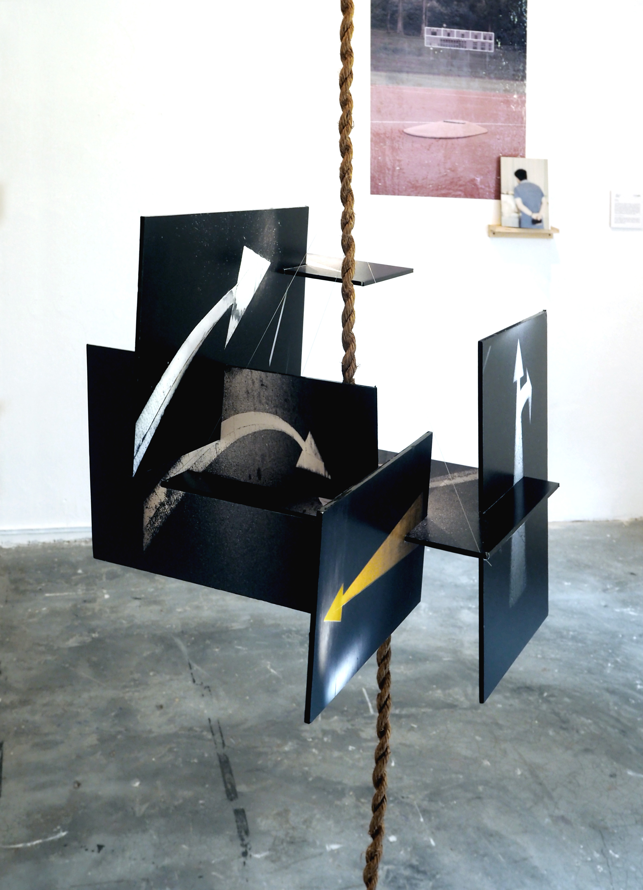
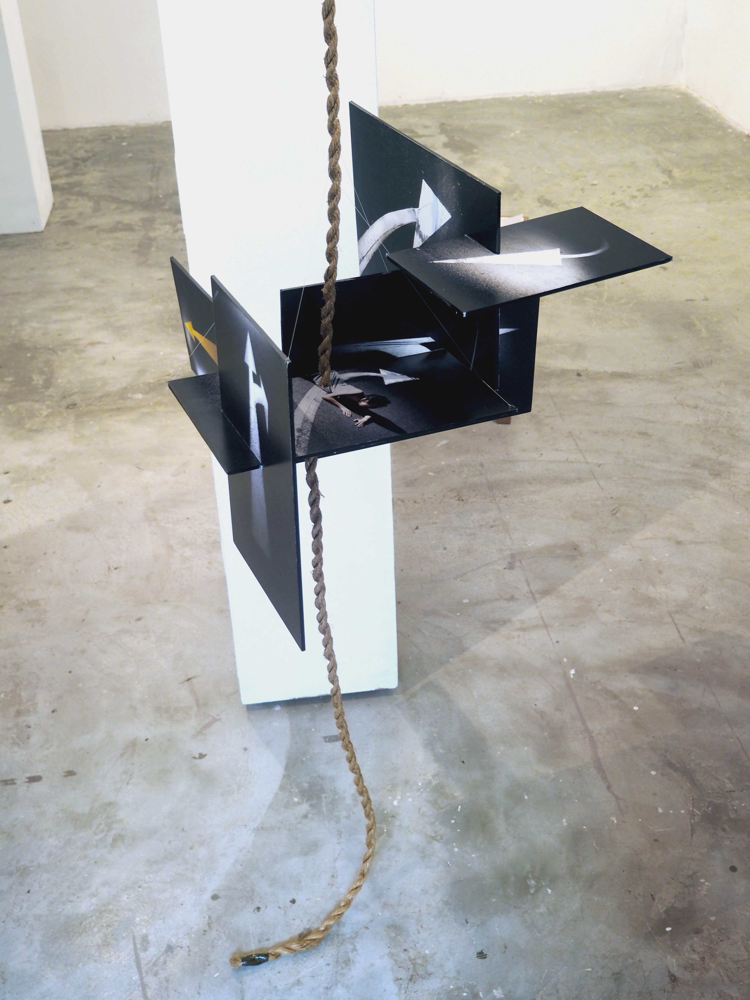

2023
photography installation — rope, inkjet on foamboard
on the ground that was stepped over and over and over again is a photographic series inspired by a mental fixation on road arrows as vessels for finding personal direction. As the directionality and targets of these arrows become ambiguous and paradoxical, the images visually manifest her desperate, tumultuous attempts to reconcile with her severed memories.
